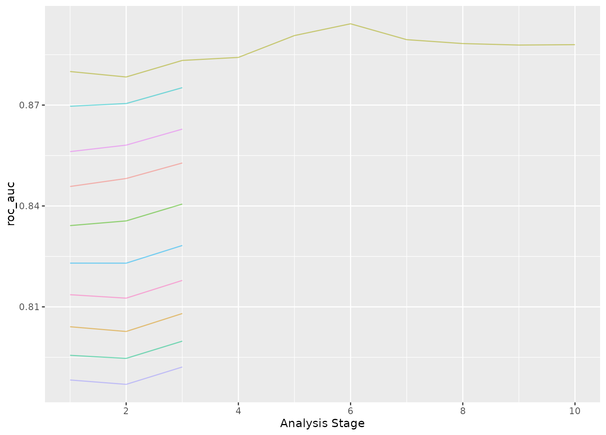

tune_race_anova() computes a set of performance metrics (e.g. accuracy or RMSE)
for a pre-defined set of tuning parameters that correspond to a model or
recipe across one or more resamples of the data. After an initial number of
resamples have been evaluated, the process eliminates tuning parameter
combinations that are unlikely to be the best results using a repeated
measure ANOVA model.
Usage
tune_race_anova(object, ...)
# S3 method for class 'model_spec'
tune_race_anova(
object,
preprocessor,
resamples,
...,
param_info = NULL,
grid = 10,
metrics = NULL,
eval_time = NULL,
control = control_race()
)
# S3 method for class 'workflow'
tune_race_anova(
object,
resamples,
...,
param_info = NULL,
grid = 10,
metrics = NULL,
eval_time = NULL,
control = control_race()
)Arguments
- object
A
parsnipmodel specification or aworkflows::workflow().- ...
Not currently used.
- preprocessor
A traditional model formula or a recipe created using
recipes::recipe(). This is only required whenobjectis not a workflow.- resamples
An
rset()object that has multiple resamples (i.e., is not a validation set).- param_info
A
dials::parameters()object orNULL. If none is given, a parameters set is derived from other arguments. Passing this argument can be useful when parameter ranges need to be customized.- grid
A data frame of tuning combinations or a positive integer. The data frame should have columns for each parameter being tuned and rows for tuning parameter candidates. An integer denotes the number of candidate parameter sets to be created automatically.
- metrics
A
yardstick::metric_set()orNULL.- eval_time
A numeric vector of time points where dynamic event time metrics should be computed (e.g. the time-dependent ROC curve, etc). The values must be non-negative and should probably be no greater than the largest event time in the training set (See Details below).
- control
An object used to modify the tuning process. See
control_race()for more details.
Value
An object with primary class tune_race in the same standard format
as objects produced by tune::tune_grid().
Details
The technical details of this method are described in Kuhn (2014).
Racing methods are efficient approaches to grid search. Initially, the
function evaluates all tuning parameters on a small initial set of
resamples. The burn_in argument of control_race() sets the number of
initial resamples.
The performance statistics from these resamples are analyzed to determine which tuning parameters are not statistically different from the current best setting. If a parameter is statistically different, it is excluded from further resampling.
The next resample is used with the remaining parameter combinations and the statistical analysis is updated. More candidate parameters may be excluded with each new resample that is processed.
This function determines statistical significance using a repeated measures ANOVA
model where the performance statistic (e.g., RMSE, accuracy, etc.) is the
outcome data and the random effect is due to resamples. The
control_race() function contains are parameter for the significance cutoff
applied to the ANOVA results as well as other relevant arguments.
There is benefit to using racing methods in conjunction with parallel processing. The following section shows a benchmark of results for one dataset and model.
Censored regression models
With dynamic performance metrics (e.g. Brier or ROC curves), performance is
calculated for every value of eval_time but the first evaluation time
given by the user (e.g., eval_time[1]) is analyzed during racing.
Also, values of eval_time should be less than the largest observed event
time in the training data. For many non-parametric models, the results beyond
the largest time corresponding to an event are constant (or NA).
Benchmarking results
To demonstrate, we use a SVM model with the kernlab package.
library(kernlab)
library(tidymodels)
library(finetune)
library(doParallel)
## -----------------------------------------------------------------------------
data(cells, package = "modeldata")
cells <- cells |> select(-case)
## -----------------------------------------------------------------------------
set.seed(6376)
rs <- bootstraps(cells, times = 25)We’ll only tune the model parameters (i.e., not recipe tuning):
## -----------------------------------------------------------------------------
svm_spec <-
svm_rbf(cost = tune(), rbf_sigma = tune()) |>
set_engine("kernlab") |>
set_mode("classification")
svm_rec <-
recipe(class ~ ., data = cells) |>
step_YeoJohnson(all_predictors()) |>
step_normalize(all_predictors())
svm_wflow <-
workflow() |>
add_model(svm_spec) |>
add_recipe(svm_rec)
set.seed(1)
svm_grid <-
svm_spec |>
parameters() |>
grid_latin_hypercube(size = 25)We’ll get the times for grid search and ANOVA racing with and without parallel processing:
## -----------------------------------------------------------------------------
## Regular grid search
system.time({
set.seed(2)
svm_wflow |> tune_grid(resamples = rs, grid = svm_grid)
})## -----------------------------------------------------------------------------
## With racing
system.time({
set.seed(2)
svm_wflow |> tune_race_anova(resamples = rs, grid = svm_grid)
})Speed-up of 5.56-fold for racing.
## -----------------------------------------------------------------------------
## Parallel processing setup
cores <- parallel::detectCores(logical = FALSE)
corescl <- makePSOCKcluster(cores)
registerDoParallel(cl)## -----------------------------------------------------------------------------
## Parallel grid search
system.time({
set.seed(2)
svm_wflow |> tune_grid(resamples = rs, grid = svm_grid)
})Parallel processing with grid search was 6.01-fold faster than sequential grid search.
## -----------------------------------------------------------------------------
## Parallel racing
system.time({
set.seed(2)
svm_wflow |> tune_race_anova(resamples = rs, grid = svm_grid)
})Parallel processing with racing was 35.51-fold faster than sequential grid search.
There is a compounding effect of racing and parallel processing but its magnitude depends on the type of model, number of resamples, number of tuning parameters, and so on.
References
Kuhn, M 2014. "Futility Analysis in the Cross-Validation of Machine Learning Models." https://arxiv.org/abs/1405.6974.
Examples
# \donttest{
library(parsnip)
library(rsample)
library(dials)
#> Loading required package: scales
## -----------------------------------------------------------------------------
if (rlang::is_installed(c("discrim", "lme4", "modeldata"))) {
library(discrim)
data(two_class_dat, package = "modeldata")
set.seed(6376)
rs <- bootstraps(two_class_dat, times = 10)
## -----------------------------------------------------------------------------
# optimize an regularized discriminant analysis model
rda_spec <-
discrim_regularized(frac_common_cov = tune(), frac_identity = tune()) |>
set_engine("klaR")
## -----------------------------------------------------------------------------
ctrl <- control_race(verbose_elim = TRUE)
set.seed(11)
grid_anova <-
rda_spec |>
tune_race_anova(Class ~ ., resamples = rs, grid = 10, control = ctrl)
# Shows only the fully resampled parameters
show_best(grid_anova, metric = "roc_auc", n = 2)
plot_race(grid_anova)
}
#>
#> Attaching package: ‘discrim’
#> The following object is masked from ‘package:dials’:
#>
#> smoothness
#> ℹ Evaluating against the initial 3 burn-in resamples.
#> ℹ Racing will maximize the roc_auc metric.
#> ℹ Resamples are analyzed in a random order.
#> ℹ Bootstrap05: All but one parameter combination were eliminated.

# }